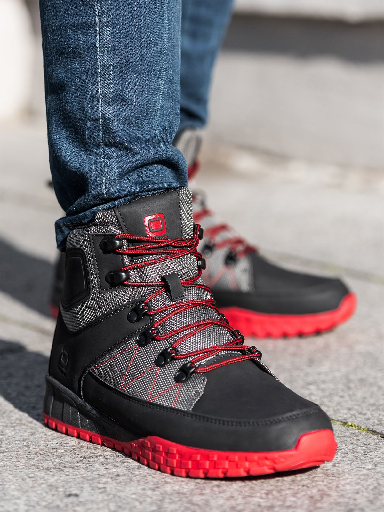

Žieminiai batai - ARMY SHOP - Karine apranga, taktine avalyne, turizmo, laisvalaikio bei kariskos prekes
- Žieminiai batai vyrams Internetu | Sizeer.lt
Žieminiai batai. 8 prekės . Rūšiuoti. Sporto šakos. ŽYGIAI PĖSČIOMIS Ženklas. Quechua Lytis. BERNIUKAMS KŪDIKIAMS BERNIUKAMS KŪDIKIAMS MERGAITĖMS MERGAITĖMS ... - Žieminiai batai, aulinukai rudeniui moterims internetu ...
ŽIEMINIAI BATAI. Pavasario / Vasaros kolekcijos aulinukai - atviri, su ažūro ir pėdoms vėsinti skirtais elementais, dažnai su kulniukais ir neretai net ekstravagantiški. Rudens / Žiemos sezono metu šią kategoriją pripildome patogia, pašiltinta, tačiau tuo pat metu stilinga ir madinga avalyne. Pamirškite nuobodžius batus su ... - Žieminiai darbo batai, žieminė avalynė | RESS.LT
Odiniai žieminiai batai su kailiu "PISTON", RUDI. Kategorija: Žieminiai batai 95,00 € (0) Šilti žieminiai batai su aulu, JUODI. Kategorija: Žieminiai batai 57,00 € (0) Sniego batai MIL-TEC THINSULATE® ... - Žieminiai batai vaikams internetu pigiau | pigu.lt
Žieminiai batai. Rodyti Filtrus. Rušiuoti. Rodyti. iš 68. Puslapis / 2 . pasirinkite filtrus. Žieminiai batai moterims . Kaina. Nuo iki Dydis. mažiau Daugiau; 35/38 (8) 36 (38) 36,5 (7) 37 (48 ... - Žieminiai batai & kedai | moterims, vyrams ir vaikams | e ...
Žieminiai darbo batai, žieminė darbo avalynė, apsauginiai batai, batai s3, batai su apsaugomis, batai su apsaugom, darbo batai vilnius, darbo batai internetu, apsauginiai batai vilniuje, zieminiai guminiai batai - Batai moterims internetu, avalynė - Jai24.LT
Žieminiai vyriški batai leis Tau jaustis laisvai ir saugiai visose sąlygose. Apsaugos Tavo pėdas nuo peršlapimo ir nuo nesaugaus sveikatai (ypač žiemą) šilumos netekimo. Vyriški žieminiai batai dėl savo pritaikytų apgalvotų konstrukcinių sprendimų leis Tau išvengti daugelio nemalonių ir nesaugių kritimų, kurie žiemą yra ... - Žieminiai batai - Decathlon
Žieminiai batai moterims internetu. 4,8/5 įvertinimas (300+ atsiliepimų), galimybė grąžinti/keisti, atsiskaitymas atsiimant! - Žieminiai batai moterims - Jai24.LT
Vyriški batai. Batai vyrams yra viena svarbiausių jų stiliaus detalių, nes įsigyti tobuli vyriški batai užtikrina, jog įvaizdis atrodys užbaigtas ir aplinkiniams (ypač moterims) sukurs gerą nuo mados neatsiliekančio stilingo vyro įspūdį. Be abjeo, norint atrodyti iš tiesų puikiai, svarbu ne tik aklai sekti madą, bet batus rinktis pagal savo stilių ir gyvenimo būdą. - Žieminiai batai vyrams Žieminiai batai ir kedai vyrams ...
Lengvučiai juodi iš PVA medžiagos įmaunami su kailiuku žieminiai batai 8863. Kodas: 8863j. 37,38,40,42. Vienu dydžiu pamažinti. 7 50 ... - Vyriški žieminiai batai internetu | Sportsman.lt
Apžiūrėk visą žieminiai batai & kedai kolekciją grąžinimui arba keitimui turėsi netgi 30 dienų Tik originalūs geriausių prekinių ženklų produktai e. parduotuvėje ★ Sizeer.lt ★

Informuojame, kad šioje svetainėje naudojami slapukai (angl. cookies ).
Sutikdami, paspauskite mygtuką „Sutinku“ arba naršykite toliau. Savo duotą sutikimą bet kada galėsite atšaukti pakeisdami savo interneto naršyklės nustatymus ir ištrindami įrašytus slapukus.
Sutinku Uždaryti 0Jūsų krepšelis yra tuščias
Kontaktai: +370 685 74145,
susisiekti e. paštu >
Prisijungti / Užsiregistruoti Krepšelis tuščias - PAPILDOM? Prekės Kontaktai Prisijungti Dovanų kuponai BLOG'as PARTNERIAIKategorijos
Apranga Striukės Žieminės striukės Vasarinės striukės Taktinės striukės Neperšlampamos striukės Kelnės Kareiviškos kelnės Neperšlampamos kelnės Laisvalaikio kelnės Termo kelnės Didesni dydžiai (3XL-7XL) Kelnės Striukės Švarkai Marškiniai, marškinėliai Džemperiai, megztiniai Šortai Liemenės Kombinezonai Apatinis trikotažas Kareiviški kostiumai Medžiotojams Šortai Bridžai Švarkai, marškiniai, palaidinės Švarkai Marškiniai ilgomis rankovėmis Marškiniai trumpomis rankovėmis Taktinės palaidinės Liemenės Taktinės liemenės Žieminės liemenės Vasarinės liemenės Marškinėliai Trumpomis rankovėmis Ilgomis rankovėmis Marškinėliai su motyvais Džemperiai ir megztiniai Megztiniai Džemperiai Džemperiai su motyvais Neperšlampami rūbai Striukės Kelnės Kostiumai Palapinsiaustės Kombinezonai Žieminiai Vasariniai Apatinis trikotažas Galvos apdangalai Vasarinės kepurės Žieminės kepurės Pošalmiai/Apsauginės kaukės Pirštinės Taktinės pirštinės Odinės pirštinės Žieminės pirštinės Mechanix pirštinės Kojinės Diržai Petnešos Moteriška apranga Vaikiška apranga Skaros/Skarelės Taktiniai šalikai Žieminiai šalikai Avalynė Taktiniai batai Turistiniai batai Darbiniai batai Guminiai batai Žieminiai batai Kerzai 3, 6, 8 skylių 10 skylių 14, 15 skylių 20, 30 skylių NEW ROCK batai Sandalai Batų priedai Kuprinės ir krepšiai Kareiviškos kuprinės Turistinės kuprinės Daiktamaišiai Krepšiai, krepšeliai, dėklai Neperšlampami maišai Dėklai ginklams Piniginės Kosmetinės Hidravimo sistemos Dėžės - lagaminai Molle krepšeliai Panelės Turizmo reikmenys Palapinės Tentai Miegmaišiai Kilimėliai Antklodės ir pašiltinimai Lovos, stalai ir kėdės Priedai Maskuojantys tinklai Hamakai Repelentai Virvės Išgyvenimo reikmenys Paracordai Išgyvenimo rinkiniai Ugnies skeltuvai Maskuotės reikmenys Kariški žetonai Dujokaukės Įvairūs Taktinės prekės Kelių ir alkūnių apsauga Klausos apsauga Kojų apsauga Veido ir akių apsauga Šalmai Taktinės liemenės Taktinės pirštinės Taktinės palaidinės Prožektoriai ir žibintai Prožektoriai Žibintai Antsiuvai Akiniai SWISS EYE BOLLÉ Įvairūs Indai ir viryklės Gertuvės ir puodeliai Termosai Katiliukai ir puodai Valgymo indai ir įrankiai Maisto gaminimo viryklės Dujos Peiliai ir įrankiai Peiliai Lenktiniai BÖKER® BlackField Citadel FOX Haller KA-BAR LE FIDELE Martinez Albainox RUI Smith & Wesson Walther Įvairūs Fiksuoti BÖKER® BlackField Citadel Damasko plieno Glock Haller KA-BAR Martinez Albainox Muela RUI Schrade Smith & Wesson Walther Įvairūs Damasko Svaidymo Grybautojams Mačetės Daugiafunkciniai įrankiai Kastuvai, pjūklai, kirviai Galąstuvai Priedai Laikrodžiai Traser H3 Tactical Adventure End of Series Active Lifestyle Limited Edition Traser raktų pakabukai KHS Enforcer Missiontimer 3 Landleader Platoon Platoon LDR Sentinel Reaper Shooter Tactical Shadow Airleader X|TAC KHS laikrodžių apyrankės Įvairūs Kompasai Žiūronai Vėliavos Įvairūs Pirmosios pagalbos priemonės Apsaugos priemonės Antrankiai Karabinai Laidynės Suvenyrai Įvairios smulkmenos Airsoft Pistoletai GAS CO2 Spring (spyruokliniai) Šautuvai CO2 AEG Spring (spyruokliniai) Priedai Dėtuvės Šoviniai, dujos Baterijos, akumuliatoriai, įkrovikliai Veido, akių apsaugos Dėklai ginklams Prožektoriai, optikos, duslintuvai Taikiniai, kojelės Valymo priemonės Diržai Granatos Aksesuarai Kariški žetonai Žiebtuvėliai Graviruoti - individualūs ZIPPO LT Įvairūs Žiebtuvėlių priedai Lankai Dartai Replikos Istoriniai durklai Istoriniai ginklai Istoriniai kardai Istoriniai kirviai Istoriniai arbaletai ir strėlės Istorinė apranga ir avalynė Istoriniai šalmai Istoriniai aksesuarai D kategorijos ginklai Ginklai Peiliai Savigynai Priedai ir amunicija Geriausi pasiūlymai Dovanų idėjos Pirmas puslapis Prekės AvalynėPrekių katalogas
Prekių katalogas
Apranga Avalynė Taktiniai batai Turistiniai batai Darbiniai batai Guminiai batai Žieminiai batai Kerzai NEW ROCK batai Sandalai Batų priedai Kuprinės ir krepšiai Turizmo reikmenys Išgyvenimo reikmenys Taktinės prekės Prožektoriai ir žibintai Antsiuvai Akiniai Indai ir viryklės Peiliai ir įrankiai Laikrodžiai Kompasai Žiūronai Vėliavos Įvairūs Airsoft Kariški žetonai Žiebtuvėliai Lankai Dartai Replikos D kategorijos ginklai Geriausi pasiūlymai Dovanų idėjosSvarbu žinoti
Svarbu žinoti
Kaip mus rasti Apie mus Prekių pristatymas ir apmokėjimas Prekių grąžinimas-keitimas Privatumo politika Kamufliažo raštai Dydžių lentelė Atsiliepimai Prekių ženklai PARTNERIAI Ginklų ir šaudmenų kontrolės įstatymasFacebook_viduje
Top10
Top10
1. Pipirinių dujų ... 2. Atšvaitas ant kojos, ... 3. Airsoft CO2 dujų ... 4. Elastinės virvės su ... 5. Dažai veidui maskuoti, ... 6. MIL-TEC "INVADER" 10H ... 7. Thermo kojinės ... 8. Austas antsiuvas ... 9. Thermo kojinės ... 10. Daugiafunkcinė mova ...Geripeiliai.lt
Kariški žetonai
Dovanų sala
Žieminiai batai
‹ 1 ›Rodoma 1 - 15 iš 15
Šilti sniego batai ARCTIC, JUODI
Kategorija: Žieminiai batai
71,50 € (0)Sniegbridžiai LUSEN
Kategorija: Žieminiai batai
85,00 € (0)Sniegbridžiai RACHEL 2000
Kategorija: Žieminiai batai
79,00 € (0)Odiniai žieminiai batai su kailiu PISTON , RUDI
Kategorija: Žieminiai batai
95,00 € (0)Šilti žieminiai batai su aulu, JUODI
Kategorija: Žieminiai batai
57,00 € (0)Sniego batai MIL-TEC THINSULATE®
Kategorija: Žieminiai batai
39,00 € (0)Šilti THERMO batai, JUODI
Kategorija: Žieminiai batai
62,00 € (0)Odiniai žieminiai pilotų batai su kailiu MIL-TEC, JUODI
Kategorija: Žieminiai batai
75,00 € (1)Ypatingai šilti THERMO batai -40° ABSOLUTE ZERO , JUODI
Kategorija: Žieminiai batai
115,50 € (0)Ypatingai šilti THERMO batai -70°C FOX XTREME , JUODI
Kategorija: Žieminiai batai
87,00 € (0)Šilti THERMO batai -40°, ŽALI
Kategorija: Žieminiai batai
64,00 € (0)THERMO batai MIL-TEC THINSULATE , JUODI
Kategorija: Žieminiai batai
75,90 € (0)Šilti THERMO batai, JUODI/RUDI
Kategorija: Žieminiai batai
62,00 € (0)Šilti odiniai/veltiniai batai
Kategorija: Žieminiai batai
54,00 € (0)Šilti THERMO batai -40°, JUODI
Kategorija: Žieminiai batai
64,00 € (0)Rodoma 1 - 15 iš 15
‹ 1 ›Gera kaina
-2,90 €Džemperis "ARMY" su užtrauktuku
23,17 € 26,07 € -23,17 €"STEEL" 15H kerzai, Green
63,72 € 86,89 € Top -7,15 €Rinkinys: baterija NIMH + baterijų įkroviklis NIMH/NICD
17,75 € 24,90 € -20%STARFORCE KSK ELITE LO batai
39,92 € 49,90 € -18,83 €"STEEL" 20H kerzai, Flag
72,40 € 91,23 € -20%STARFORCE THUNDERSTORM batai
76,00 € 95,00 € -14,48 €"STEEL" 3H kerzai, Flag
43,44 € 57,92 € -18,83 €"STEEL" 20H kerzai, Blue
72,40 € 91,23 € -18,83 €"STEEL" 20H kerzai, Burgundy
72,40 € 91,23 € Rezultatai 9 iš 10 Rodyti daugiau KONTAKTAI Jurbarko g. 5, 47183 Kaunas
info@army-shop.lt
Vadovas: +370 685 74145
Administracija: 867319291
UAB "Army Shop"
Įmonės kodas: 302706797
PVM kodas: LT100006609512
A. s. LT483500010001001082
UAB Paysera LT.
www.kariskizetonai.lt
www.geripeiliai.lt MUS RASITE
ARMY SHOP XXL
Jurbarko g. 5
47183 Kaunas
ARMY SHOP
Prekybos miestelis URMAS
Pramonės pr. 16, Kaunas
Vakarinė galerija, 5 salė, 5 vieta


Mauris vulputate dolor
Rutrum fermentum nibh in augue praesent urna congue rutrum.
Etiam posuere